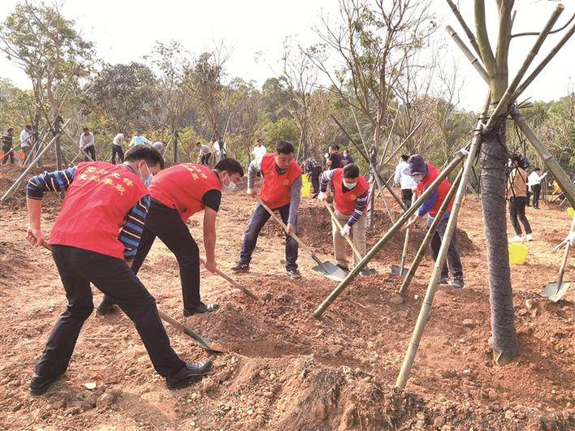
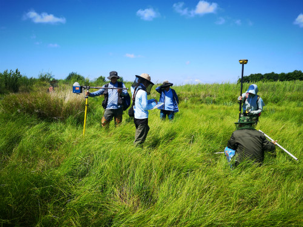
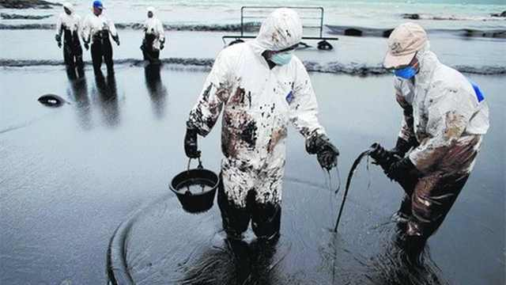
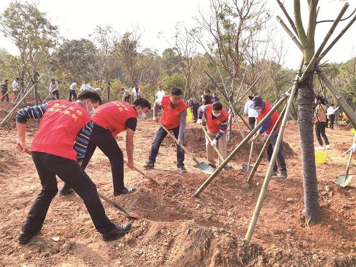
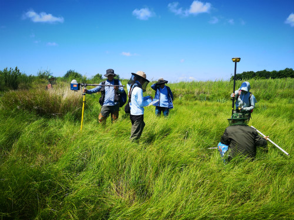
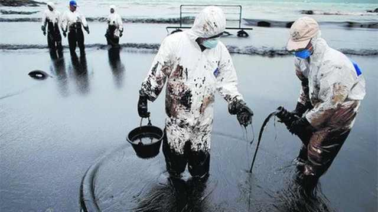

森林保护

严禁滥砍滥伐，加强森林防火和病虫害防治。建立自然保护区，保护森林生态系统和珍稀物种。开展植树造林活动，提高森林覆盖率。
湿地保护

保护湿地水源，控制周边的开发建设，避免湿地面积减少。恢复受损湿地生态功能，保护湿地生物多样性。
海洋保护

减少陆源污染物排入海洋，加强对海上石油开采等海洋开发活动的监管，防止海洋污染。保护珊瑚礁、红树林等海洋生态系统，禁止过度捕捞，维护海洋生物资源平衡。
了解更多环保知识，加入我们，一起行动！

严禁滥砍滥伐，加强森林防火和病虫害防治。建立自然保护区，保护森林生态系统和珍稀物种。开展植树造林活动，提高森林覆盖率。

保护湿地水源，控制周边的开发建设，避免湿地面积减少。恢复受损湿地生态功能，保护湿地生物多样性。

减少陆源污染物排入海洋，加强对海上石油开采等海洋开发活动的监管，防止海洋污染。保护珊瑚礁、红树林等海洋生态系统，禁止过度捕捞，维护海洋生物资源平衡。
了解更多环保知识，加入我们，一起行动！